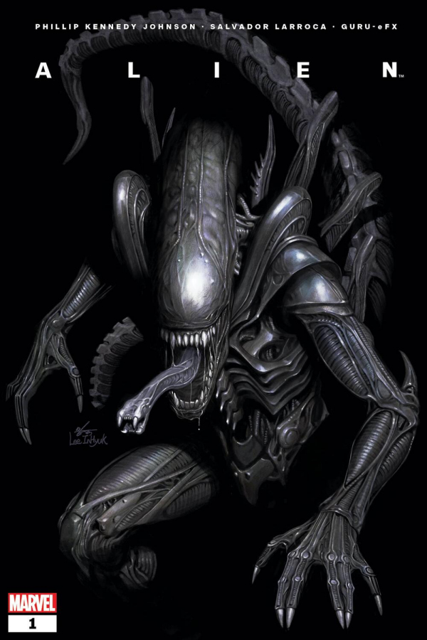

Earlier this year, Marvel Comics announced, to a big excitement of the overjoyed fans of the Alien franchise, that all-new limited comic book series set in the iconic – and deeply terrifying – world of the Xenomorph would be launching at some point during 2021. Now, Marvel further clarified that the first of these forays into never-before-seen dark corners of the Alien universe will begin in March 2021 with ALIEN #1.
Written by Phillip Kennedy Johnson (Empyre: Captain America) with art by Salvador Larroca (Avengers, Fantastic Four, X-Men), ALIEN #1 will be a thrilling addition to the now legendary Alien universe spanning all genres and beginning with the ground-breaking 1979 science fiction horror film by Ridley Scott. Featuring both canon-based and brand-new characters from Earth and beyond, this new bold take on the Alien mythology aims to entertain both seasoned fans and complete newcomers to the legendary horror science fiction saga alike.
The miniseries' new story arc will feature a Weyland-Yutani mercenary named Gabriel Cruz as he battles a deadly new breed of Xenomorph with the survival of his child at stake. No stranger to infusing the classic Marvel storytelling with horror, the series writer Phillip Kennedy Johnson most recently scared his readers senseless in the terrifying ‘Marvel Zombies: Resurrection’ series.
and with my talented friends at Marvel and some of the greatest artists in comics telling these stories with me,
I can promise you: our nightmares will be also yours - says comic artist Salvador Larroca
“Just as a reader and fan, I was as excited as anyone when I heard the [Alien] franchise was coming to Marvel, and when they asked me to write the launch [issue], I was floored. I’ve been training my whole life for this gig without knowing it.” Johnson says, before adding: “Ever since seeing Ridley Scott’s Alien at way too young an age, I’ve been obsessed with the Xenomorph – the single most iconic representation of terror on film.”
“Drawing this has been like a dream come true, and I am so grateful to be a part of this series.” says comic's artist Salvador Larroca and then continues: “Ever since I was young, Alien has been one of my favourite sci-fi horror franchises, and I never could have expected to have the chance to draw this. Alien is a creative reference to a whole generation of artists, and I’m so proud to now be illustrating this series. I hope readers enjoy it as much as I do drawing it.”

Larroca then concludes by saying: “I’ve devoured every Alien story I could find in every imaginable medium available and spent a lot of hours in the back of a classroom sketching out ideas for what happened before, after, and in-between the chapters we got to see in the movies. Now, aided by Phillip Kennedy Johnson's awesome storytelling, I finally have the opportunity to bring my favourite nightmares to life. And, with my insanely talented friends at Marvel and some of the greatest artists in comics telling these stories with me, I can promise you: our nightmares will be yours.”